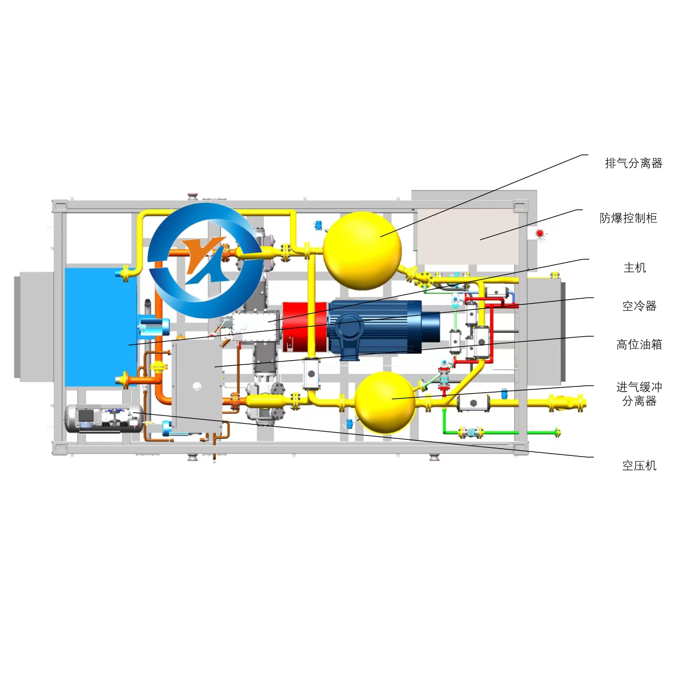
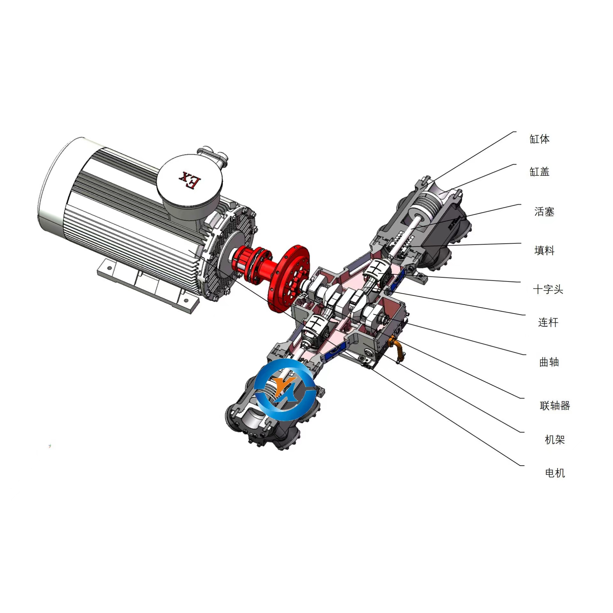

Compressor Working Principle and Structure
Views: 1338 | Date: 2023-07-24 | Source: Compressor Network


Overview
This article explains the working principle and structure of reciprocating piston compressors, including the main components, compression cycle, and key technical features used in natural gas compression applications.
Main Components
1. Cylinder and Piston Assembly - The core compression chamber where gas is compressed
2. Crankshaft and Connecting Rod - Converts rotary motion to reciprocating motion
3. Suction and Discharge Valves - Controls gas flow into and out of the cylinder
4. Cooling System - Maintains optimal operating temperature
5. Lubrication System - Ensures smooth operation and reduces wear
Working Principle
The compressor operates through a four-stroke cycle:
1. Suction Stroke - Gas enters the cylinder through the suction valve as the piston moves downward
2. Compression Stroke - The piston moves upward, compressing the gas
3. Discharge Stroke - Compressed gas is discharged through the discharge valve
4. Expansion Stroke - Remaining gas expands as the piston moves downward
Technical Features
- Horizontal opposed balance design for smooth operation
- High-speed operation (1500 rpm) with compact footprint
- Energy-efficient with low noise levels
- Suitable for natural gas, hydrogen, nitrogen, and other gases
- Operating temperature range: -51°C to 50°C
Applications
Reciprocating piston compressors are widely used in:
- CNG refueling stations
- Natural gas wellhead collection
- Pipeline transmission and boosting
- Petrochemical and chemical processing
- Industrial gas compression applications
Note: This is a technical reference article. For detailed specifications, installation guides, and operation manuals, please contact our technical support team or download product documentation from our Downloads section.